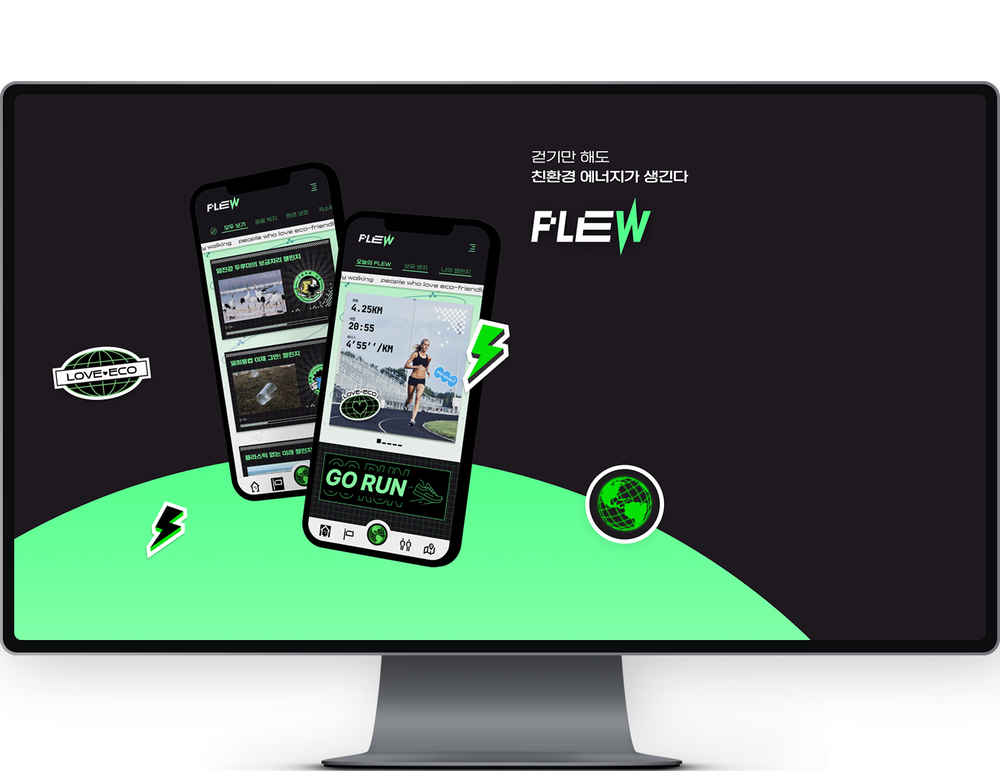
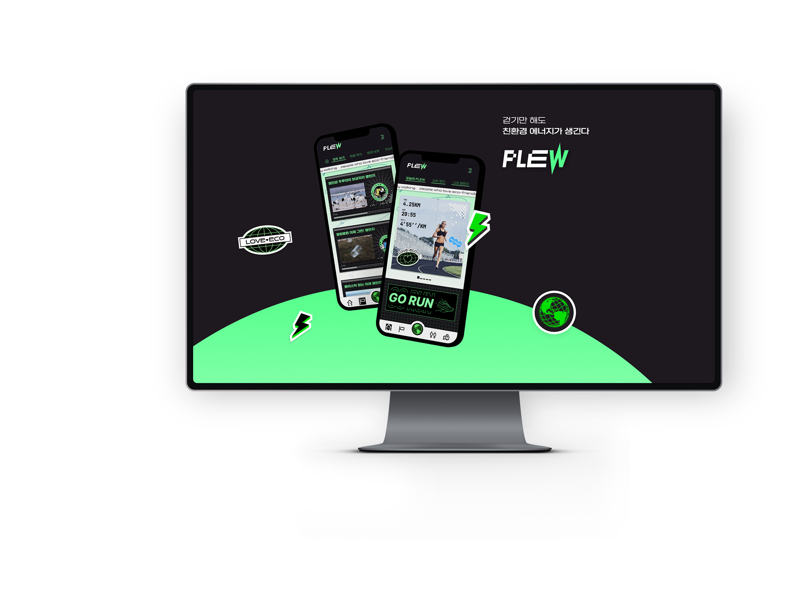

UX/UI PLEW!
프로젝트 제목 및 설명PLEW는 친환경 걷기 어플입니다. UXUI 방법론과 프로토타입, A/B 타입 테스트 등 실무 UX를 적용시켜서 제작하였고 힙한 컨셉의 GUI로써 제작했습니다.
기여도 : 디자인 100%, 개발 100%
글꼴 : NOTOSANS
- pdf 설명 PDF 다운로드

OVERVIEW
"미닝 아웃", 자신의 선행을 SNS에 자랑하고 가치관을 공유하는 문화에 착안해 제작한 친환경 봉사 걷기 어플리케이션입니다. 타겟층 트렌드 조사와 무드보드를 통해 독특하고 눈에 띄는 비주얼로 제작했습니다.